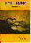

1978
1978 1 jan. Årets motto är "Metoden för att förverkliga Guds rike på jorden."
Slogan: 1-1-1 = Varje medlem, vägleder en ny medlem, varje månad.
Vår tidning 

118 par välsignas i London.
22 jun Youn-Jin Moon föds.
. Ocean Church . Il Sung byggbolag
. Kyung bok grundskola
. World Media Association
aug Odd Aune blir ny nationsledare för Sverige.
1978 startade en europeisk mobilisering i England - Leeds blev den svenska missionsstaden.